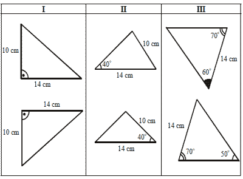
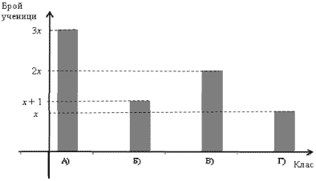
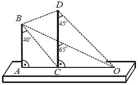
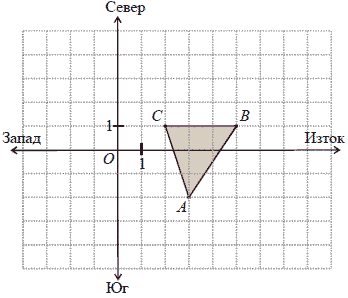
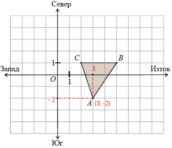
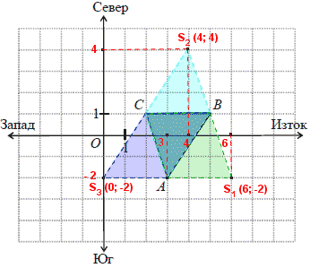

ПЪРВИ МОДУЛ
ЗАДАЧИ С ИЗБИРАЕМ ОТГОВОР
Отговорите на задачи от 1. до 16. включително отбележете в листа с отговори!
Критерии за оценяване
Верният отговор на всяка задача от 1 до 8 включително се оценява с по 2 точки.
- Стойността на израза 15 – (8 + b) при b = – 9 е:
Проверете отговор
Моля, изберете отговор.
Отговорът е грешен.
Упътване: Приведете даденият израз в нормален вид и след това заместете b с неговото равно.
Отговорът е верен.
Вижте решение
Решение:
- Разкриваме скобите:
15 – (8 + b) = 15 – 8 – b = 7 – b.
- Заместваме с b = – 9:
7 – (–9) = 7 + 9 = 16.
- Верен отговор Г).
- Стойността на израза 472 – 2.47.53 + 532 е равна на:
Проверете отговор
Моля, изберете отговор.
Отговорът е грешен.
Упътване: Използвайте
Формула (2) от формулите за съкратено умножение.
Отговорът е верен.
Вижте решение
Решение:
- Използваме формула (2):
472 –2.47.53 + 532 = (47 – 53)2 = (–6)2 = 36.
- Верен отговор Б).
- Изразът 4ax – 8ay е тъждествено равен на:
Проверете отговор
Моля, изберете отговор.
Отговорът е верен.
Вижте решение
Решение:
- 4a е общ множител на двата едночлена, затова го изнасяме пред скоба и получаваме отговор Б).
- Верен отговор Б).
- Решенията на неравенството 12 – 4x ≥ 0 се представят с интервала:
Проверете отговор
Моля, изберете отговор.
Отговорът е верен.
Вижте решение
- В квадратната мрежа е начертана отсечката AB. Коя точка e връх на равнобедрен триъгълник с основа AB?
Проверете отговор
Моля, изберете отговор.
Отговорът е верен.
Вижте решение
- Две от страните на триъгълник са 3 cm и 6 cm. Дължината на третата му страна може да бъде:
Проверете отговор
Моля, изберете отговор.
Отговорът е верен.
Вижте решение
- На чертежа MNPQ е успоредник. Мярката на ъгъл NMQ е:
Проверете отговор
Моля, изберете отговор.
Отговорът е верен.
Вижте решение
Решение:
- MQP = MQN + NQP = 65° + 45° = 110°.
- (MN || QP) ∩ MQ MQP + NMQ = 180° (като прилежащи ъгли) NMQ = 180° – 110° = 70°.
- Верен отговор Г).
- В 200 грама сок има 20% захар. Колко грама захар има в 50 грама от същия сок?
Проверете отговор
Моля, изберете отговор.
Отговорът е грешен.
Упътване:
- От дадения процент намерете колко захар има в 200 гр. сок.
- Съставете пропорция, като с х означете търсеното количество захар.
Отговорът е верен.
Вижте решение
Решение:
- Намираме колко захар има в 200 грама сок:
20% от 200 = гр.
- Отбелязваме с х търсеното количество захар в 50 грама сок и съставяме равенството:
= 10.
- Верен отговор В).
Критерии за оценяване
Верният отговор на всяка задача от 11 до 16 включително се оценява с по 3 точки.
- Естественото число m увеличих 3 пъти и получих число, по-малко от 21. Най-голямото число m, за което това е вярно, е:
Проверете отговор
Моля, изберете отговор.
Отговорът е верен.
Вижте решение
Решение:
- От условието съставяме Неравенството:
3m < 21 m < 7.
- Най-голямото цяло число, решение на това неравенство, е 6.
- Верен отговор А).
- Коренът на уравнението x2 – 2(x – 1) = x(x + 1) е:
Проверете отговор
Моля, изберете отговор.
Отговорът е верен.
Вижте решение
- Корените на уравнението 3 – |x – 3| = 1 са:
Проверете отговор
Моля, изберете отговор.
Отговорът е верен.
Вижте решение
Решение:
- Преобразуваме модулното уравнение до Основен вид:
3 – |x – 3| = 1 – |x – 3| = 1 – 3 = –2 |.(–1) |x – 3| = 2.
- Това уравнение се разпада на две уравнения:
- Верен отговор А).
- В колони І, ІІ и ІІІ на таблицата са начертани три двойки триъгълници.

Съгласно данните двойките еднакви триъгълници са само:
Проверете отговор
Моля, изберете отговор.
Отговорът е верен.
Вижте решение
- Ако AOC е изправен, то мярката на α е:
Проверете отговор
Моля, изберете отговор.
Отговорът е верен.
Вижте решение
- В ΔABC симетралата на АВ пресича страната АС в точка М. Ако АС = 10 cm и ВС = 8 cm, периметърът на ΔBMC е:
Проверете отговор
Моля, изберете отговор.
Отговорът е верен.
Вижте решение
- На чертежа ABCD е правоъгълник и СЕ е ъглополовяща. Ако AE =3 cm и BC = 2 cm, то лицето на правоъгълника в квадратни сантиметри е:
Проверете отговор
Моля, изберете отговор.
Отговорът е грешен.
Упътване: Докажете, че ΔEBC е
равнобедрен.
Отговорът е верен.
Вижте решение
Решение:
- CE – ъглополовяща ECB = ECD = 45°.
- От Теорема за сбор на ъгли в ΔEBC BEC = 45° (защото EBC = 90°, ECB = 45°), т.е. ΔEBC – равнобедрен или BE = BC = 2 cm.
- AB = AE + EB = 3 + 2 = 5 cm.
- SABCD = AB.BC = 5.2 = 10 cm2.
- Верен отговор Б).
- Автомобил се движи 3 чáса със скорост x km/h и още 5 чáса със скорост y km/h. Средната му скорост V се изчислява с формулата V = (3x + 5y). Колко е средната му скорост, ако се движи 3 чáса със скорост 90 km/h и 5 чáса със скорост 66 km/h?
Проверете отговор
Моля, изберете отговор.
Отговорът е грешен.
Упътване: В дадената формула заместете х и y с техните равни.
Отговорът е верен.
Вижте решение
Решение:
- Заместваме дадените стойности на х и y във формула:
V = (3x + 5y) = (3.90 + 5.66) = 75.
- Верен отговор В).
ЗАДАЧИ СЪС СВОБОДЕН ОТГОВОР
Отговорите на задачи от 17. до 20. включително запишете на съответните места в листа с отговори.
- Ако x + y = 5, колко е стойността на израза x2 + 2xy + y2 – 9?
Вижте упътване
Упътване:
Използвайте Формула (1) от Формулите за съкратено умножение.
Вижте решение
Решение:
- Преобразуваме с помощта на Формула (1):
x2 + 2xy + y2 – 9 = (x + y)2 – 9.
- Заместваме с даденото:
52 – 9 = 25 – 9 = 16.
- Краен отговор:
16.
Критерии за оценяване
- За ΔABC на чертежа DE||BC.
Във втората колона на таблицата запишете пропуснатия текст така, че всяко твърдение да отговаря на данните от чертежа.
А) Мярката на ECB е …… °.
Б) Триъгълникът ECD според страните си е ……………….
В) Разстоянието от точката Е до АС е дължината на отсечката …….
Г) Отсечката АС е два пъти по-малка от отсечката ……………….
Вижте упътване
Вижте решение
Решение:
A) От DE || BC BCE = DEC = 45° (като кръстни ъгли), т.е. мярката на ECB e 45°.
Б) От DEC = DCE = 45° ΔECD – равнобедрен.
В) Разстояние на точка Е до права АС е разстоянието по перпендикуляра:
- От Теорема за сбор на ъгли в ΔDEC EDC = 180° – (45° + 45°) = 90°.
- Затова ED AC, т.е. тръсеното разстояние е отсечката
DE.
Г) Отсечката АС е два пъти по-малка от отсечката АВ, защото:
- Намираме ъглите на ΔABC:
- ACB = ACE + ECB = 45° + 45° = 90°.
- От Теорема за сбор на ъгли в ΔABC ABC = 90° – 60° = 30°.
- От Теорема за катет, лежащ срещу ъгъл 30° в правоъгълен триъгълник следва, че AC = AB.
- Т.е. АС е два пъти по-малка от отсечката
AB.
Критерии за оценяване
А) 2 точки – за верен отговор 45°.
Б) 2 точки – за верен отговор равнобедрен.
В) 2 точки – за верен отговор DE.
Г) 2 точки – за верен отговор AB.
- Сега Калина е с 4 години по-голяма от Симеон. Преди две години тя е била два пъти по-голяма от него. На колко години е всеки от тях сега? Напишете името на всеки и срещу него – годините му.
Вижте упътване
Упътване:
Отбележете с х сегашните години на Симеон и съставете уравнение от условието, че преди две години Калина е била два пъти по-голяма от Симеон.
Вижте решение
Решение:
- Съставяме таблица, като с х отбелязваме сегашните години на Симеон
| |
Сега |
Преди 2 години |
| Симеон |
x |
x – 2 |
| Калина |
x + 4 |
x + 4 – 2 = x + 2 |
- Съставяме уравнение от условието, че преди две години Калина е била два пъти по-голяма от Симеон, т.е. x + 2 = 2(x – 2) x = 6.
- Отговор: Сегашните години на
Симеон са x = 6, а на Калина: x + 4 = 6 + 4 = 10.
Критерии за оценяване
- 3 точки – за правилен отговор:
Симеон – 6, Калина – 10.
- 2 точки – за написани правилни години (числа) без да е записано на кого са те или ако годините им са разменени.
- 1 точка – за правилно определени години само на един от двамата.
- 0 точки – за всички останали случаи.
- На диаграмата е показано разпределението на отсъстващите днес общо 29 ученици от четири класа, означени с А), Б), В) и Г). По колко ученици отсъстват от всеки клас?

Отговора попълнете във втората колона на таблицата.
Вижте упътване
Упътване:
Намерете х и след това от диаграмата изчислете отсъстващите ученици във всеки клас.
Вижте решение
Решение:
- От диаграмата определяме, че отсъстващите ученици във всеки клас са:
Клас (А) – отсъстват 3х ученика.
Клас (Б) – отсъстват х + 1 ученика.
Клас (В) – отсъстват 2х ученика.
Клас (Г) – отсъстват х ученика.
- По условие отсъстващите ученици са 29. Затова съставяме уравнението:
3x + x + 1 + 2x + x = 29 x = 4.
- Намираме отсъстващите ученици във всеки клас:
Клас (А) – отсъстват 3х = 3.4 = 12 ученика.
Клас (Б) – отсъстват х + 1 = 4 + 1 = 5 ученика.
Клас (В) – отсъстват 2х = 2.4 = 8 ученика.
Клас (Г) – отсъстват х = 4 ученика.
Критерии за оценяване
Общо 12 точки, като за всички правилен отговор по 2 точки.
ВТОРИ МОДУЛ
Отговорите на задачи 21. и 22. запишете на съответните места в листа с отговори.
- МОДЕЛ НА ПЛАТНОХОД
Петко конструира платноход. Моделът на чертежа показва как той трябва да разположи мачтите AB и CD и въжетата BC, BO, BD и DO.
А) Намерете колко градуса е ъгълът между въжетата BC и BO.
Б) Под какъв наклон е въжето BD спрямо мачтата CD (в градуси)?
Представете отговора на този въпрос, като препишете изреченията и попълните липсващия текст.
Според страните си ΔDCO е ………………………. В ΔBCO страните с равни дължини са ……… и ………. Получава се, че мярката на BDC е ………°.
Вижте упътване
Упътване:
A) Намерете ъгъл АСВ и след това ъгъл BCD.
Б) Докажете, че ΔBCD е равнобедрен и намерете ъглите му.
Вижте решение
Решение:
А) Търсения ъгъл е CBO. Последователно намираме:
Б) Попълваме даденото изречение:
Критерии за оценяване
А) 2 точки – за правилен отговор 25° (приема се и без мерна единица).
Б) Общо 3 точки (по 1 точка за всяко правилно попълнено изречение).
- КОНТРОЛЕН ПУНКТ
На монитора в един контролен пункт е представено разположението на три бази А, B и С чрез съответни точки в правоъгълна координатна система спрямо географските посоки, както е показано на чертежа. Всеки две бази са свързани с праволинеен път.
А) Подредете по дължина пътищата, които свързват всеки две от тези бази, като започнете от най-късия.
Б) Напишете координатите на най-южната от трите бази.
В) Необходимо е да се построи четвърта база S така, че четирите бази да са върхове на успоредник. Напишете координатите на всички възможни положения на точката S.
Вижте упътване
Вижте решение
Решение:
А) Сравняваме страните на ΔABC като използваме Теоремите за неравенства между страни и ъгли в триъгълник:
- От координатната система се вижда, че BC = 3, т.е. тя е най-малката страна в ΔABC.
- От координатната система се вижда, че ABC < ACB AC < AB.
- Затова имаме BC < AC < AB.
- Отговор:
BC, AC, AB.
Б) Както се вижда от чертежа търсената точка има координати A(3; –2).

В) Както се вижда от чертежа успоредниците са: AS1BC, ABS2C и ABCS3. Търсените точки имат координати: S1(6; –2), S2(4; 4), S3(0; –2).

Критерии за оценяване
А)
- 2 точки – за правилен отговор
BC, AC, AB.
- 1 точка – за правилна подредба, но в низходящ ред.
- 0 точки – за всички останалите случаи.
Б)
- 2 точки – за правилен отговор
A (3; –2).
- 1 точка – правилно определена една координата на точката А.
- 0 точки – за всички останали случаи.
B) Общо 6 точки – по 2 точки за всички правилно определени координати. Ако в някой от случаите правилно е определена само една от координатите се дава 1 точка за този случай.
Условията на задачи 23. и 24. включително и указание за решаването им може да намерите тук.